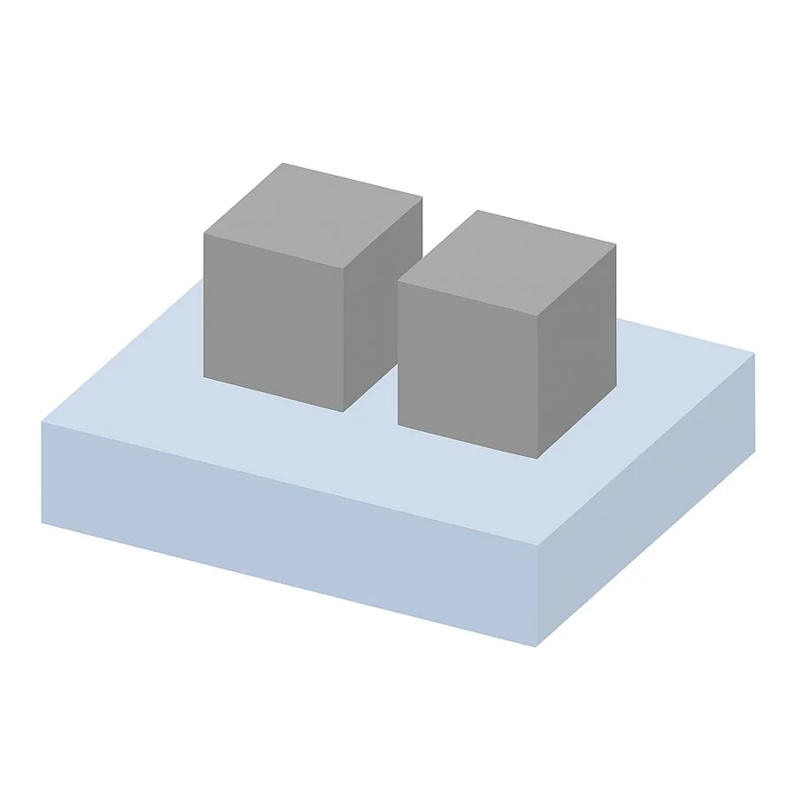
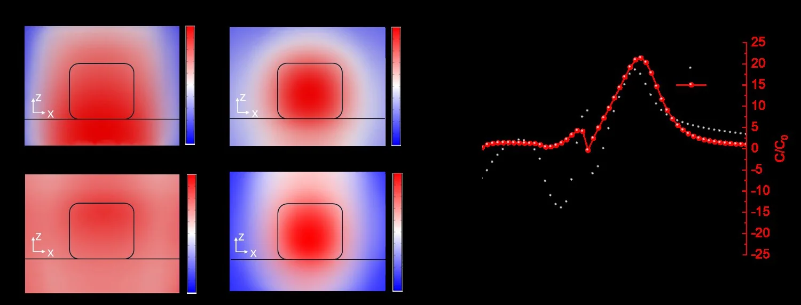
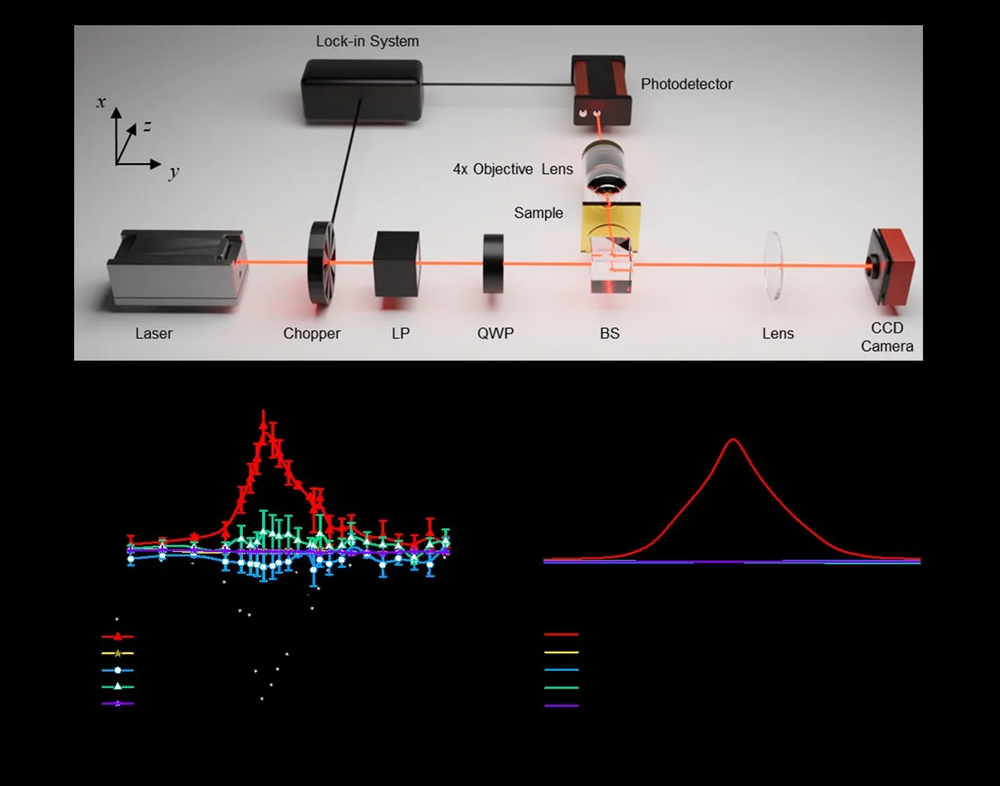

Superchiral fields with achiral dielectric metasurfaces
KEY RESULT~12× measured enhancement in molecular CD
We designed arrays of symmetric silicon nanocube dimers to support overlapping electric and magnetic resonances. Under circularly polarized illumination, enhanced optical chirality develops inside the narrow dimer gap.
In solution-phase experiments with D- and L-phenylalanine, the metasurface yielded approximately twelve-fold enhancement of the measured circular dichroism signal. The third Stokes parameter in the far field offered an experimentally accessible indicator of the resonant near-field response.


